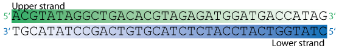

This page is part of the GeneWarrior Documentation. Go to the main site of GeneWarrior
See also how to create a reverse complement sequence.
Each nucleotide in a double stranded DNA molecule is paired with its Watson-Crick counterpart. This counterpart is called its complementary nucleotide.
Example:

Original sequence: ACGTATAGGCTGACACGTAGAGATGGATGACCATAG
Reverse sequence: GATACCAGTAGGTAGAGATGCACAGTCGGATATGCA
Complement sequence: TGCATATCCGACTGTGCATCTCTACCTACTGGTATC
Reverse complement: CTATGGTCATCCATCTCTACGTGTCAGCCTATACGT
List of all complement nucleotides:
| Base | Name / Bases | Complementary Base |
|---|---|---|
| A | Adenine | T |
| C | Cytidine | G |
| G | Guanidine | C |
| T | Thymidine | A |
| Y | Pyrimidine (CT) | R |
| R | Purine (AG) | Y |
| S | Strong (GC) | S |
| W | Weak (AT) | W |
| K | Keto (TG) | M |
| M | Amino (AC) | K |
| B | not A (CGT) | V |
| D | not C (AGT) | H |
| H | not G (ACT) | D |
| V | not T (ACG) | B |
| N | Unknown (ACGT) | N |
See the Tutorial on how to create reverse complement sequence.